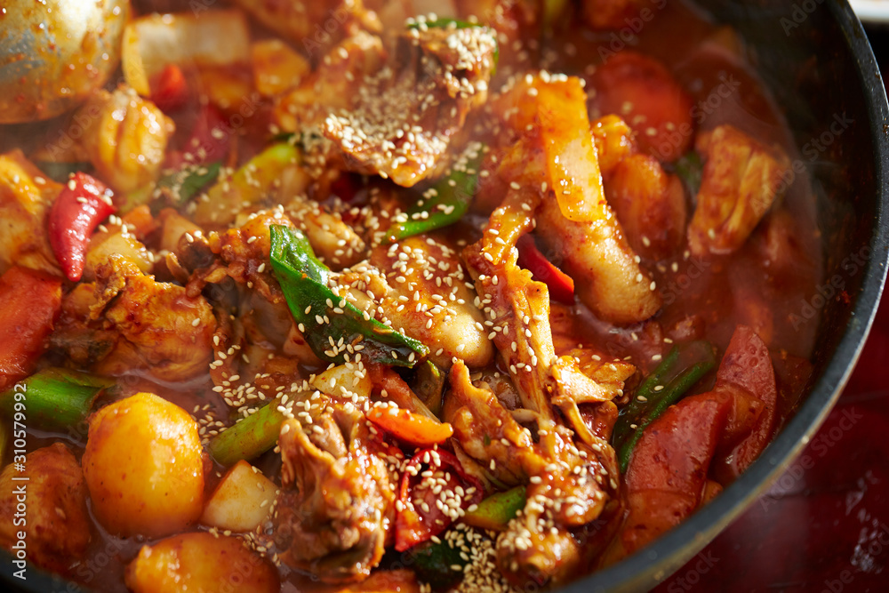
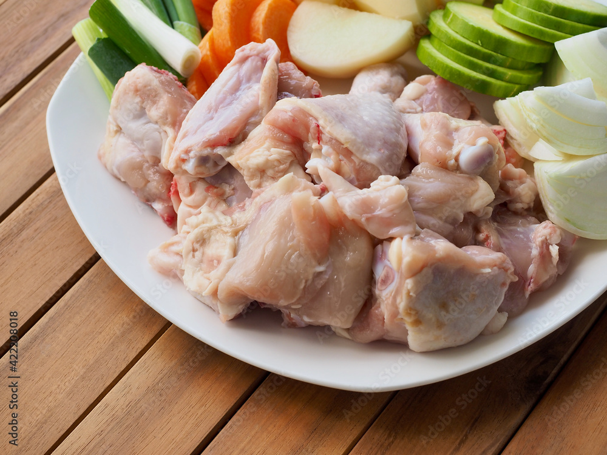
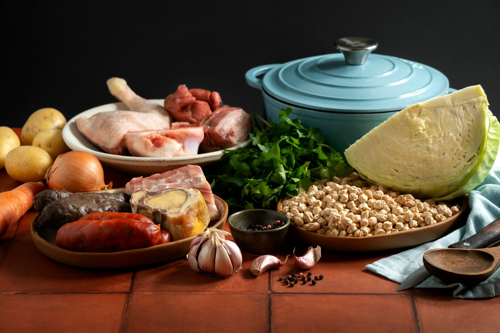
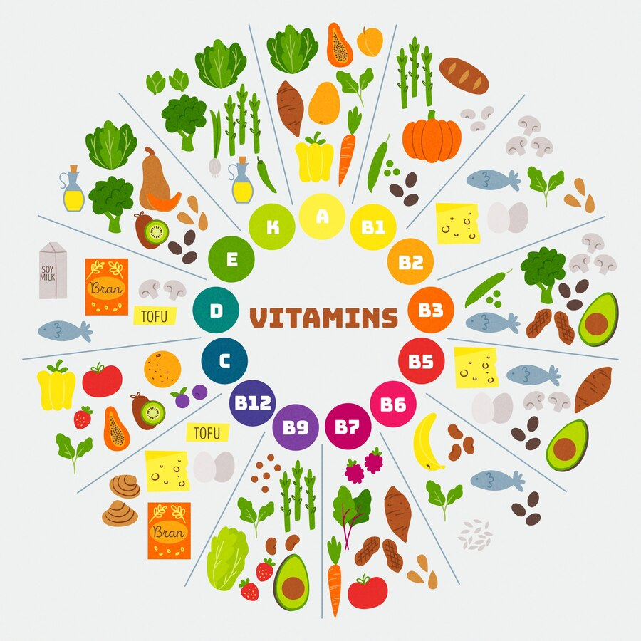
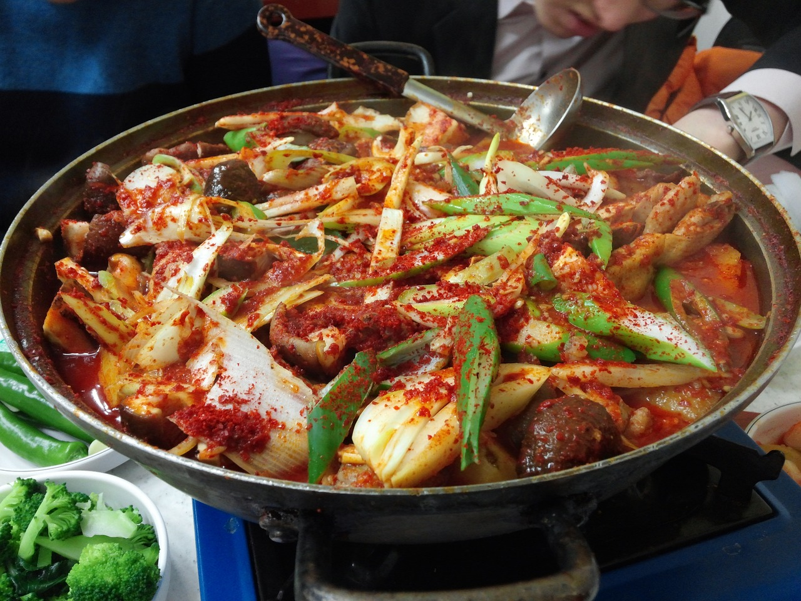
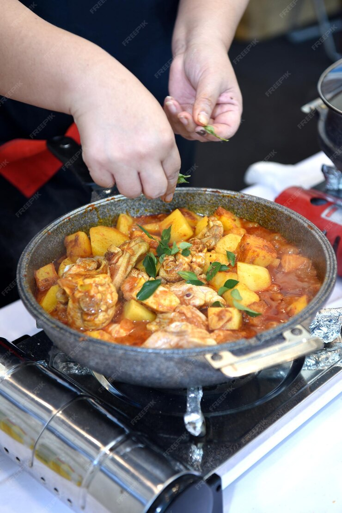

It is a traditional spicy chicken stew in Korea. If you read it literally in Korean, it is
Dak-bokkeum-tang. It is a dish made by seasoning chicken,
potatoes, carrots, onions, etc. with red pepper paste, red pepper powder, and soy sauce, and
it boasts a spicy yet deep taste. The name 'Dak-bokkeum-tang' comes from a recipe for
roasting ingredients and then adding more soup to the stew.
It is a spicy food. Just as spicy food is popular in Korea, it is very popular and loved by
Koreans.

A very close-up picture of cooking
Braised spicy chicken is a representative home-style dish in Korea with a long history and
tradition. There is a theory that the word "dori" originated from Japanese, but recently,
some people interpret it as a Korean dialect. It is very popular in the cold winter because
it is a hot dish, but it is actually a popular dish regardless of the season.
People eat it as an *Anju or as a meal. When it's eaten as a meal, it's usually served with
white rice. Personally, I think it goes well with soju, which is a Korean alcoholic
beverage, and I don't think it goes well with whiskey or wine. *Anju is a Korean term for food consumed with alcohol.

Chicken is the main ingredient

Not only chicken but also various vegetables and ingredients
Main ingredients: Chicken (drumstick, thigh, etc.), potato, carrot, onion, green onion Seasoning: Gochujang, red pepper powder, soy sauce, minced garlic, ginger, sesame oil, sugar, pepper
Prepare the chicken: Soak the chicken in cold water to drain the blood, then blanch it in boiling water to remove any impurities.
Prepare the marinade: Make the marinade by mixing gochujang, chili powder, soy sauce, minced garlic, ginger, sugar, and pepper.
Start cooking: Add the chicken, marinade, and water to a pot and bring to a boil over medium heat.
Add vegetables: Stir in potatoes, carrots, and onion, bring to a boil, then simmer over medium heat until chicken is cooked.
Finish: Add the scallions and sesame oil, and simmer for a few more minutes to finish.
A common recipe. A recipe for cooking using a pot
Prepare the chicken: Soak the chicken in cold water to drain the blood.
Prepare the marinade: Make the marinade by combining the gochujang, chili powder, soy sauce, minced garlic, ginger, sugar, and pepper.
Start cooking: Add the chicken, marinade, and water to the cooker and cook to the set temperature.
Add vegetables: Add potatoes, carrots, and onions, and cook to the cooker setting.
Finish: Add scallions and sesame oil and cook for a few more minutes to finish.

Photos showing what vitamins the vegetables have
This food is a good source of protein, vitamins, and minerals.
Chicken is a great source of protein and a good source of nutrition.
Chicken fiber is fine and soft, so it's easily absorbed by the body,
which is great for digestion. Chicken contains a lot of B vitamins,
which is great for your skin. It also contains a lot of calcium and iron,
which helps improve your bones and blood.
This dish also contains a lot of gochujang and chili powder,
which boosts your immune system. Chili peppers raise your body temperature,
which boosts your metabolism, and capsaicin helps break down fats.
It also contains a lot of vegetables, such as potatoes, carrots, onions, and garlic,
which are rich in vitamins and nutrients.

A picture of putting all the ingredients and sprinkling red pepper powder on top before the food is cooked

A picture of someone cooking this food
Cheese Version: Add cheese to the dishes to make it more creamy and flavorful.
The cheese can be added as it cooks, or it can add it as a topping after it's done cooking.
Most often, the cheese version is added at the end of cooking and served as a topping.
Seafood Version: Same as the original recipe, but it can add a little more seasoning and add seafood (squid, shrimp, etc.) for a different flavor.
Soy sauce Version: Instead of chili powder, soy sauce is added to the chicken stir-fry, making it sweet and not spicy.
This food is a traditional Korean chicken stew with a spicy, rich flavor that's easy to make at home with a variety of ingredients and spices. It's a nutritious and healthy dish, and you can try different variations for even more flavor. Dakbokkeumtang (닭볶음탕), also known as Dakdoritang (닭도리탕), is a traditional Korean chicken stew celebrated for its spicy, rich flavor. This dish, a staple in Korean cuisine, is beloved by those who enjoy robust and spicy food. Dakbokkeumtang is more than just a meal; it's a reflection of Korean culinary traditions that emphasize bold flavors and communal eating. Perfect for sharing with friends and family, this stew is usually eaten with steamed rice on a side. It enhances the whole meal experience by matching very nicely with the popular Korean alcoholic beverage, soju. This stew is not only delicious but also nutritious; chicken offers a solid source of protein and the vegetables include vital minerals and vitamins. For people who prefer strong, fiery dishes, chili peppers are a quite healthy choice since they help to boost metabolism. Dakbokkeumtang can be tailored to fit several palates. Though some recipes call for sweet potatoes, mushrooms, or zucchini, vegetables can be customized to fit taste. Some chefs may toss a dash of rice wine or fish sauce for an added depth of taste. Its delicate chicken and strong, fiery broth make for a filling and consoling meal. This stew provides a great gastronomic experience regardless of your level of cooking skill; it is really simple to cook. I would strongly suggest this dish to anyone who enjoys chicken made in a Korean way and is a lover of spicy food. If you are a lover of soju, which is a type of alcoholic beverage that is popular in Korea, I strongly suggest that you try it with it. It is going to fascinate your pallets, and I am certain that you are going to adore it!
This song is K-POP. As this food is spicy, I wanted to put in a famous Korean song with the word spicy.